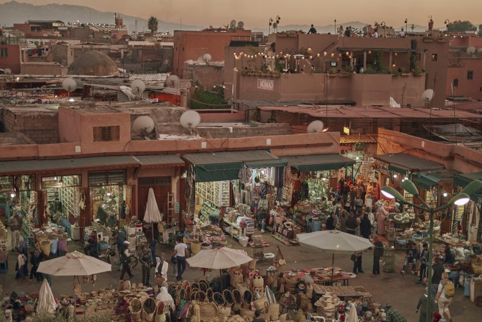

Le Maroc

Fermez les yeux. Imaginez. Il fait chaud. Partout autour de vous, une architecture croulant de détails
et de couleurs, des places débordantes e vie, des échoppes amoncelées dans les ruelles, des odeurs
alléchantes, des épices chatouillant vos papilles, des gens avenants à chaque porte.
Voyagez un peu plus loin. Des dunes immenses, des montagnes époustouflantes, un mer à perte de vue,
des terres d’ocres, des maisons dans la roche, des troupeaux de chèvre dans les villages.
Vous êtes au Maroc.
La bonne nouvelle ? Le rêve peut facilement devenir réalité. La moins bonne ? Il sera difficile de
choisir quels lieux visiter au Maroc tant il y a à découvrir. Mais pas de panique, nous sommes là
et nous vous proposons un mini guide des douze plus beaux endroits du Maroc.
Chefchaouen
Pour visiter le Maroc en passant par ses villes, il y a plusieurs incontournables. Parmi elles : Chefchaouen ou la ville bleue. Très photogénique, cette petite ville est connue pour ses façades, ses arches, ses ruelles, ses habitations entièrement peintes en bleu.
En arpentant Chefchaouen, vous découvrirez une ville aux décors surréalistes et dont le charme opère immédiatement. Les enchevêtrements des rues donnent une impression de labyrinthe enchanté. Impossible de ne pas être subjugué par ce dédale indigo, tantôt vif et électrique, tantôt pâle ou doux.
En prenant de la hauteur, les teintes bleutées de la ville offre un panorama magique. Lors de votre passage à Chefchaouen, ne manquez pas d’admirer cette vue au coucher du soleil.
Marrakech

Evidemment que vous pensez à Marrakech si on vous demande quoi visiter au Maroc. Mais au as où cela vous aurez échappé, nous vous confirmons que la capitale touristique est bel et bien un des plus beaux endroits du Maroc. De jour comme de nuit, la ville rouge exerce une attraction incroyable :
- L’ambiance folle de la place Jamaa El-Fna ;
- Le superbe Jardin Marjorelle ;
- Les dédales merveilleux des souks ;
- Les commerces ambulants ;
- L’incontournable Palmeraie de Marrakech ;
- Les couleurs et les lumières omniprésentes ;
- Les couscous à tire larigot ;
- Les jardins exotiques et majestueux ;
- Les palais croulant d’ornement et de détails ;
- Les bâtiments historiques et la Mosquée Koutoubia ;
- Les raids secrets et raffinés ;
- Les rooftops donnant sur l’incroyable Médina.
Merzouga et les dunes du Sahara
Difficile de ne pas passer par le Sahara quand on souhaite visiter le Maroc. Au sud-est du pays se
niche justement le village saharien de Merzouga. C’est la porte d’entrée idéale pour partir explorer
les plus grandes dunes marocaines. Appelé aussi Erg Chebbi, ce massif lunaire du Sahara offre un
véritable paysage de carte postale. Ici, ce sont le désert, les dunes et les dromadaires tels que
vous les avez toujours imaginé ! A perte de vue, vous ne trouverez qu’une mer de sable d’or.
Pour profiter de cet endroit exceptionnel lors de votre séjour au Maroc, de nombreuses activités
s’offrent à vous : balade à dos de dromadaire, nuit à la belle étoile avec des nomades Saharouis,
nuit en bivouacs berbères ou simplement balade sportive à pieds.
Les cascades d’Ouzoud
Vous cherchez quoi visiter au Maroc après avoir profiter de la frénésie d’une des capitales impériales ?
Les cascades d’Ouzoud vous rendront heureux ! C’est indéniablement un des plus sites naturels du Maroc.
Ces cascades hautes de cent dix mètres tombent en trombes sur trois paliers creusés dans la roche.
Pour visiter les cascades d’Ouzoud, suivez un sentier de randonnée vous menant au travers de la
forêt, à la rencontre de marchands en tout genre et de singes. Attention, ce sont de vrais chipeurs !
Lorsque vous arrivez aux pieds des cascades, vous vous sentirez minuscules et vous ne résisterez
pas à l’envie de vous approcher de ces chutes gigantesques. Empruntez une drôle d’embarcation pour
passer de l’autre côté et faite une pause tajine face aux chutes gigantesques. Sur le retour, les
panoramas sont tout aussi prodigieux. Partez à la recherche de l’endroit où vous pourrez voir
l’arc-en-ciel au dessus des cascades.
Fès
Vous souhaitez visiter le Maroc raffiné, historique et artistique ? Alors direction Fès,
une ville mythique et bourrée d’attraits.
La Médina, ou vieille ville, de Fès est réputée comme étant la plus belle du pays. Son charme
vient de ses traces omniprésentes du passé. L’empreinte de l’Histoire se dessine sur chaque
école, mosquée ou ruelle. Le mieux encore est de se perdre dans ces couleurs du temps.
La visite de tannerie Chouara de Fès est également un passage obligé. Baladez-vous entre les
bassins et prenez ensuite de la hauteur sur ces terrasses colorées. Un des plus beaux spectacles
vivant lors de votre séjour chez la fassis.
La Maroc est également connu pour sa céramique et c’est à Fès que vous trouverez les plus belles
œuvres . Leur caractéristique ? Ce bleu perçant dont la recette reste secrète. Une poterie de Fès
est un des meilleures souvenir à rapporter d’un voyage au Maroc.